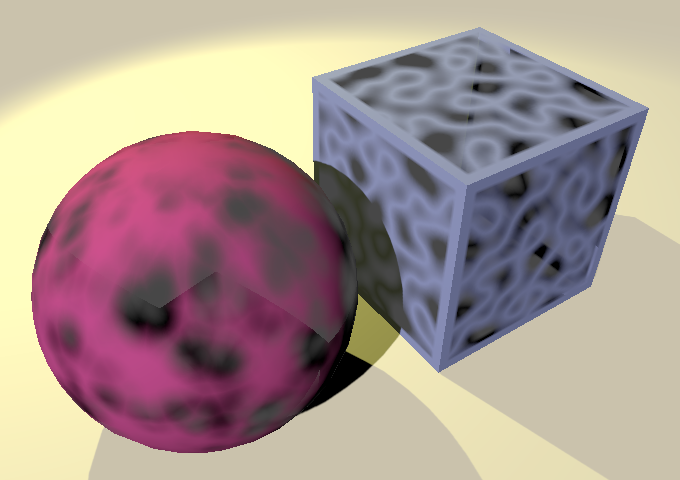
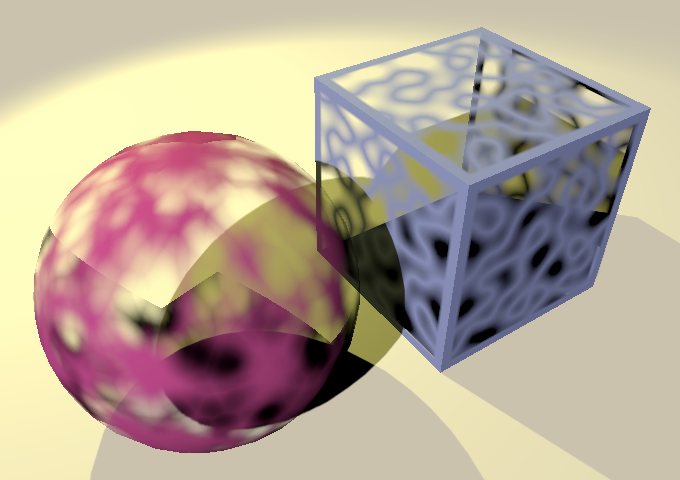
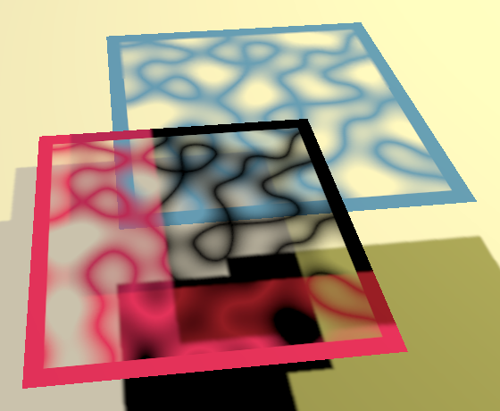
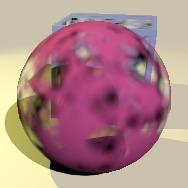
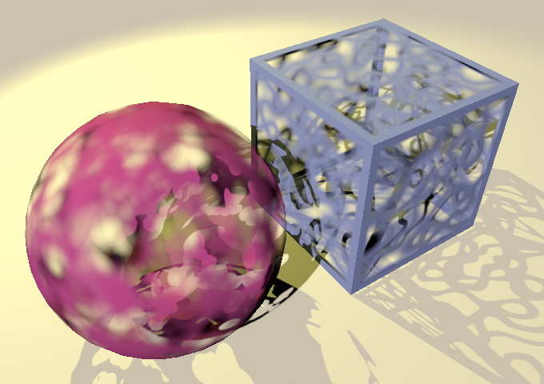
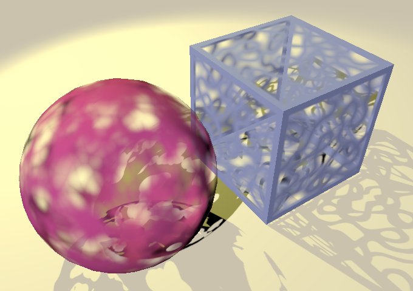
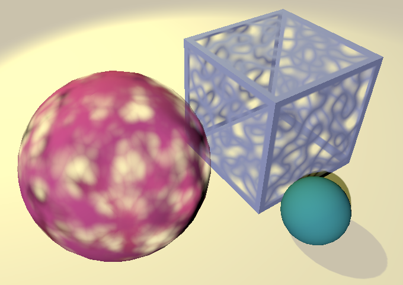

Transparency
Clipping and Fading
- Perform alpha clipping.
- Render both sides of a mesh.
- Support different blend modes.
- Generate a double-sided mesh.
- Create a shader GUI with presets.
This is the sixth installment of a tutorial series covering Unity's scriptable render pipeline. It's about adding support for alpha clipping and semi-transparent materials.
This tutorial is made with Unity 2018.3.0f2.
Alpha Clipping
As explained in Rendering 11, Transparency, it's possible to cut holes in geometry by discarding fragments based on an alpha map. This technique is known as alpha clipping, alpha testing, or cutout rendering. Besides that, it's exactly the same as rendering opaque geometry. So to support alpha clipping we only have to adjust our shader.
Alpha Maps
Alpha clipping is only useful when a material's alpha varies across its surface. The most straightforward way to achieve this is with an alpha map. Here are two textures for that, one for square geometry like quads and cubes, and one for spheres.
{kind=link}

Import these textures and indicate that their alpha channel represents transparency. Their RGB channels are uniform white so won't affects the material's appearance.
Texturing
Add a main texture property to the Lit shader. We'll use is as the source for albedo and alpha, with solid white as the default.
Properties {
_Color ("Color", Color) = (1, 1, 1, 1)
_MainTex("Albedo & Alpha", 2D) = "white" {}
}
Create two new materials, one for lit alpha-clipped spheres and one for lit clipped squares, using the appropriate textures.
In the Lit include file, add declarations for the main texture and its sampler state. This works like for the shadow map, but uses the TEXTURE2D and SAMPLER macros instead.
TEXTURE2D_SHADOW(_CascadedShadowMap); SAMPLER_CMP(sampler_CascadedShadowMap); TEXTURE2D(_MainTex); SAMPLER(sampler_MainTex);
We need UV texture coordinates for sampling, which are part of the mesh data. So add them to the vertex input and output structs.
struct VertexInput {
float4 pos : POSITION;
float3 normal : NORMAL;
float2 uv : TEXCOORD0;
UNITY_VERTEX_INPUT_INSTANCE_ID
};
struct VertexOutput {
float4 clipPos : SV_POSITION;
float3 normal : TEXCOORD0;
float3 worldPos : TEXCOORD1;
float3 vertexLighting : TEXCOORD2;
float2 uv : TEXCOORD3;
UNITY_VERTEX_INPUT_INSTANCE_ID
};
To apply the tiling and offset of the texture, add the required _MainTex_ST shader variable, in a UnityPerMaterial buffer. Then we can use the TRANSFORM_TEX macro when transferring the UV coordinates in LitPassVertex.
CBUFFER_START(UnityPerMaterial)
float4 _MainTex_ST;
CBUFFER_END
…
VertexOutput LitPassVertex (VertexInput input) {
…
output.uv = TRANSFORM_TEX(input.uv, _MainTex);
return output;
}
We can now sample the main map in LitPassFragment with the SAMPLE_TEXTURE2D macro to retrieve the albedo and alpha data, which we when multiply with the color data. We'll also return the alpha value from now on. That's not needed right now, but will be used later.
float4 LitPassFragment (VertexOutput input) : SV_TARGET {
UNITY_SETUP_INSTANCE_ID(input);
input.normal = normalize(input.normal);
//float3 albedo = UNITY_ACCESS_INSTANCED_PROP(PerInstance, _Color).rgb;
float4 albedoAlpha = SAMPLE_TEXTURE2D(_MainTex, sampler_MainTex, input.uv);
albedoAlpha *= UNITY_ACCESS_INSTANCED_PROP(PerInstance, _Color);
…
float3 color = diffuseLight * albedoAlpha.rgb;
return float4(color, albedoAlpha.a);
}
Discarding Fragments
Alpha clipping is done by discarding fragments when their alpha value falls below some cutoff threshold. The cutoff value lies between 0 and 1 and is configurable, so add a shader property for it, with ½ as the default.
Properties {
_Color ("Color", Color) = (1, 1, 1, 1)
_MainTex("Albedo & Alpha", 2D) = "white" {}
_Cutoff ("Alpha Cutoff", Range(0, 1)) = 0.5
}
Add the corresponding variable to the UnityPerMaterial buffer. Then invoke the clip function with the fragment's alpha value minus the threshold. That will cause all fragments that end up below the threshold to be discarded, which means that they don't get rendered.
CBUFFER_START(UnityPerMaterial)
float4 _MainTex_ST;
float _Cutoff;
CBUFFER_END
…
float4 LitPassFragment (VertexOutput input) : SV_TARGET {
…
albedoAlpha *= UNITY_ACCESS_INSTANCED_PROP(PerInstance, _Color);
clip(albedoAlpha.a - _Cutoff);
…
}
Objects with an alpa-clipped material are now rendered with holes in them. The size of the holes depends on the cutoff value. However, that's only true for the object surface itself. The shadows that they cast are still solid, because we haven't adjusted those yet.
Clipped Shadows
Clipping shadows works exactly like clipping in the lit pass, so adjust the ShadowCaster include file accordingly. Because the final alpha value depends on both the main map and the material color, we now also have to sample the instanced color in ShadowCasterPassFragment, so we have to pass the instance ID along as well.
CBUFFER_START(UnityPerMaterial)
float4 _MainTex_ST;
float _Cutoff;
CBUFFER_END
CBUFFER_START(_ShadowCasterBuffer)
float _ShadowBias;
CBUFFER_END
TEXTURE2D(_MainTex);
SAMPLER(sampler_MainTex);
#define UNITY_MATRIX_M unity_ObjectToWorld
#include "Packages/com.unity.render-pipelines.core/ShaderLibrary/UnityInstancing.hlsl"
UNITY_INSTANCING_BUFFER_START(PerInstance)
UNITY_DEFINE_INSTANCED_PROP(float4, _Color)
UNITY_INSTANCING_BUFFER_END(PerInstance)
struct VertexInput {
float4 pos : POSITION;
float2 uv : TEXCOORD0;
UNITY_VERTEX_INPUT_INSTANCE_ID
};
struct VertexOutput {
float4 clipPos : SV_POSITION;
float2 uv : TEXCOORD0;
UNITY_VERTEX_INPUT_INSTANCE_ID
};
VertexOutput ShadowCasterPassVertex (VertexInput input) {
VertexOutput output;
UNITY_SETUP_INSTANCE_ID(input);
UNITY_TRANSFER_INSTANCE_ID(input, output);
…
output.uv = TRANSFORM_TEX(input.uv, _MainTex);
return output;
}
float4 ShadowCasterPassFragment (VertexOutput input) : SV_TARGET {
UNITY_SETUP_INSTANCE_ID(input);
float alpha = SAMPLE_TEXTURE2D(_MainTex, sampler_MainTex, input.uv).a;
alpha *= UNITY_ACCESS_INSTANCED_PROP(PerInstance, _Color).a;
clip(alpha - _Cutoff);
return 0;
}
Double-Sided Rendering
Because only the front side of geometry gets rendered, our alpha-clipped objects are missing their back sides. This is obvious when rotating the view around them. Also, their shadows don't match what we see, because only the front side relative to the light source casts a shadow. The solution to this is to render both sides of the geometry, which allows us to see the inside of the object surfaces and makes the inside surface cast shadows.
Which sides get rendered is controlled by a shader's cull mode. Either no culling takes place, all front-facing triangles are culled, or all back-facing triangles are culled. We can add a float shader property that represents an enum value, with 2 as the default, corresponding to the usual back-face culling.
Properties {
_Color ("Color", Color) = (1, 1, 1, 1)
_MainTex("Albedo & Alpha", 2D) = "white" {}
_Cutoff ("Alpha Cutoff", Range(0, 1)) = 0.5
_Cull ("Cull", Float) = 2
}
We can expose this property via an enum popup, by adding the Enum attribute to the property. The desired enum type can be supplied as an argument, which in this case is CullMode from the UnityEngine.Rendering namespace.
[Enum(UnityEngine.Rendering.CullMode)] _Cull ("Cull", Float) = 2
Although we have defined it as a shader property, the cull mode is not directly used by the shader programs. It's used by the GPU to decide which triangles are passed to the fragment programs and which are discarded. We control this via a Cull statement in the shader pass. If we used a fixed cull mode, them we could suffice with something like Cull Off, but we can also make it depend on our shader property, by writing Cull [_Cull]. Do this for both passes.
Pass {
Cull [_Cull]
HLSLPROGRAM
…
ENDHLSL
}
Pass {
Tags {
"LightMode" = "ShadowCaster"
}
Cull [_Cull]
HLSLPROGRAM
…
ENDHLSL
}
Flipping Normals for Backfaces
We're now seeing both sides of the geometry, but the inside isn't lit correctly. This is easiest to see by having our materials cull the front faces, so we only see the insides.
It turns out that the lighting is flipped. What's lit should be dark, and vice versa. That's because the normal vectors are meant to be used for the outside, not the inside. So we have to negate the normal vectors when rendering back faces.
The GPU can tell the fragment program whether it's shading a fragment of a front or a back face. We can access this information by adding an additional parameter to LitPassFragment. The type and semantic of this parameter depend on the API, but we can use the FRONT_FACE_TYPE and FRONT_FACE_SEMANTIC macros from the Core library. Likewise, we can use the IS_FRONT_VFACE macro to choose between two alternatives based on whether we're dealing with a front or a back face. Use this to negate the normal vector when necessary.
float4 LitPassFragment (
VertexOutput input, FRONT_FACE_TYPE isFrontFace : FRONT_FACE_SEMANTIC
) : SV_TARGET {
UNITY_SETUP_INSTANCE_ID(input);
input.normal = normalize(input.normal);
input.normal = IS_FRONT_VFACE(isFrontFace, input.normal, -input.normal);
…
}
The inside surface now gets shaded correctly, although it still ends up darker than the outside because of self-shadowing.
Optional Clipping
When alpha clipping is used the GPU can no longer assume that the entire triangle gets rendered, which makes some optimizations impossible. So it's best to only enable alpha clipping when necessary. So we'll create two shader variants: one with and one without clipping. We can do that with a shader keyword, like the pipeline controls whether shadows are used, except this time we'll control it via a material property.
Add a toggle property to control clipping to the shader. It has to be a float, with a default value of zero. Give it a Toggle attribute, which will make it show up as a checkbox. Besides that, the attribute can be supplied with a keyword that it enables or disables when the property is changed. We'll use the _CLIPPING keyword.
[Toggle(_CLIPPING)] _Clipping ("Alpha Clipping", Float) = 0
_Cutoff ("Alpha Cutoff", Range(0, 1)) = 0.5
We can now add another multi-compile statement, but the expectation is that this toggle won't change during play but only when editing material assets. So we don't need to always generate shader variants for both options. We can do that by using the #pragma shader_feature directive instead. In case of a single toggle keyword, we can suffice with just listing that keyword and nothing else. Do this for both passes.
#pragma instancing_options assumeuniformscaling #pragma shader_feature _CLIPPING
Now we can make sure that we only clip in Lit if the _CLIPPING keyword is defined.
#if defined(_CLIPPING) clip(albedoAlpha.a - _Cutoff); #endif
And the same goes for ShadowCaster.
#if defined(_CLIPPING) float alpha = SAMPLE_TEXTURE2D(_MainTex, sampler_MainTex, input.uv).a; alpha *= UNITY_ACCESS_INSTANCED_PROP(PerInstance, _Color).a; clip(alpha - _Cutoff); #endif
Note that we could optimize further by eliminating the UV coordinates too, but that optimization is less important so I won't cover that. Likewise, you could use a shader feature to only check the triangle facing when clipping is off, which is another optimization I skip.
Alpha-Test Render Queue
Besides potentially discarding fragments, alpha-clipped rendering works the same as opaque rendering and both can be mixed without issue. But because alpha clipping prevents some GPU optimizations it is typical to first render all purely opaque objects before rendering all alpha-clipped objects. That enables the most GPU optimization, potentially limits the amount of alpha-clipped fragments as more end up hidden behind opaque geometry, and can also reduce the amount of batches. All this can be done by simply setting the alpha-clipped materials to use a later render queue. The default material inspector exposes the queue, so we can manually change it. The default queue for alpha-clipped materials is 2450, corresponding to the AlphaTest option from the dropdown menu.
Semi-Transparency
If a fragment doesn't get clipped it is fully opaque. So alpha-clipping can be used to cut holes in objects, but it cannot represent semi-transparent surfaces. We have some more work to do before our shader supports semi-transparency.
Blend Modes
When something is semi-transparent, at least some of what's behind it shines through. To achieve that with a shader we have to change how a fragment's own color gets blended with the color that got rendered earlier. We can do that by changing the blend mode of the shader.
The blend mode is controlled like the cull mode, but with two weighing options that are used to blend the new and old color. The first is known as the source—what we're rendering now—and the second as the destination—what was rendered before. For example, the default blend mode is Blend One Zero, which means that the new color completely replaces the old one.
Add two shader properties for the source and destination blend, just like for culling, except with the BlendMode enum type. Set their default values to one and zero.
[Enum(UnityEngine.Rendering.CullMode)] _Cull ("Cull", Float) = 2
[Enum(UnityEngine.Rendering.BlendMode)] _SrcBlend ("Src Blend", Float) = 1
[Enum(UnityEngine.Rendering.BlendMode)] _DstBlend ("Dst Blend", Float) = 0
Add a blend statement to the lit pass only. The ShadowCaster pass only cares about depth so blend modes don't affect it.
Pass {
Blend [_SrcBlend] [_DstBlend]
Cull [_Cull]
…
}
The simplest form of semi-transparency is fading a fragment based on its alpha value. That's done by using the source's alpha as the weight for the source and one minus the source's alpha as the weight for the destination. We can select those options from the dropdown menus. Do this for new fade materials, and also turn off culling for them.

There are a lot of other blend modes too. Most are rarely used but some are used for different kinds of transparency. For example, pre-multiplied blending uses one for the source instead of the source's alpha. That makes it possible to keep specular reflections—to represent surfaces like glass—but requires some shader changes too which I won't cover here.
Transparent Render Queue
Fading only works if there's already something behind what's getting rendered. Our pipeline already takes care of that, first rendering the opaque queues, then the skybox, and finally the transparent queues. Our fade materials just have to use the correct queue. The default Transparent option is fine.

Not Writing Depth
Semi-transparency now sometimes works as it should, but also produces weird results. This is especially noticeable because we're still casting shadows as if the surfaces were opaque. This happens because we're not culling, so both sides of the surfaces get rendered. Which part gets rendered first depends on the triangle order of the mesh. When a font-facing triangle gets rendered first, there isn't a back side to blend with yet. And the back won't get rendered because it's behind something that already got rendered.
The same problem also happens when two separate transparent objects are close to each other. Unity sorts transparent objects back-to-front, which is correct but can only consider the object position, not shape. Part of an object that's drawn first can still end up in front of an object that gets drawn later. For example, put two two mostly-overlapping quads in the scene, one a bit above the other, and adjust the view until the top one gets rendered first.
We cannot avoid this except by carefully controlling the placement of semitransparent objects or using materials with different render queues. In case of intersecting objects or a double-sided material with arbitrary triangle order, it will always go wrong. But what we can do is disable writing to the depth buffer for transparent materials. That way what gets rendered first will never block what gets rendered later.
Add another float shader property to control Z writing, which is on by default. We could again use a toggle, but that will always produce a keyword, which we don't need in this case. So instead we'll make it a custom enumeration with an off and on state, by writing [Enum(Off€, 0, On€, 1)].
[Enum(UnityEngine.Rendering.BlendMode)] _DstBlend ("Dst Blend", Float) = 0
[Enum(Off€, 0, On€, 1)] _ZWrite ("Z Write", Float) = 1
Add a ZWrite control to the lit pass only, as once again this doesn't concern shadows.
Blend [_SrcBlend] [_DstBlend] Cull [_Cull] ZWrite [_ZWrite]

Now both quads get fully rendered, even when their draw order is incorrect. However, the bottom quad still gets drawn after the top quad, so it's still not correct. This is exacerbated by the solid shadows of the quads. It is also very obvious when the draw order flips. This is a limitation of transparent rendering that you have to keep in mind when designing a scene.
Double-Sided with Semi-Transparency
With Z writing disabled, the insides of objects always get rendered when culling is off. However, the draw order is still determined by the triangle order of the mesh. This is guaranteed to produce incorrect results when using the default sphere and cube.
With an arbitrary mesh the only way to ensure that the back faces are drawn first is to duplicate the object and use two materials, one that culls front an another that culls back. Then adjust the render queues so that the inside is drawn first.
That works for an individual object, but not when multiple such objects are visually overlapping. In that case all outsides gets drawn on top of all insides.
Making a Double-Sided Mesh
The best way to render double-sided semi-transparent surfaces is to use a mesh specifically created for this purpose. The mesh must contain separate triangles for its inside and outside, ordered so that the inside is drawn first. Even then, this only reliably works for concave objects that never visually overlap themselves.
You can create a double-sided mesh with a separate 3D modeler, but we can also make a simple tool in Unity to quickly generate a double-sided variant of any source mesh. To do so, create a static DoubleSidedMeshMenuItem class and put its asset file in an Editor folder. We'll use to it add the Assets/Create/Double-Sided Mesh item to Unity's menu. That's done by adding the MenuItem attribute to a static method, with the desired item path as an argument.
using UnityEditor;
using UnityEngine;
public static class DoubleSidedMeshMenuItem {
[MenuItem("Assets/Create/Double-Sided Mesh")]
static void MakeDoubleSidedMeshAsset () {}
}
The idea is that the user first selects a mesh and then activates the menu item, then we'll create its double-sided equivalent. So the first step is to get a reference to the selected mesh, which is done via Selection.activeObject. If there isn't a selected mesh, instruct the user to select one and abort.
static void MakeDoubleSidedMeshAsset () {
var sourceMesh = Selection.activeObject as Mesh;
if (sourceMesh == null) {
Debug.Log("You must have a mesh asset selected.");
return;
}
}
We begin by creating the inside portion of the mesh. Clone the source mesh by instantiating it, retrieve its triangles, reverse their order via System.Array.Reverse, and assign the result back to it. That flips the facing of all triangles.
if (sourceMesh == null) {
Debug.Log("You must have a mesh asset selected.");
return;
}
Mesh insideMesh = Object.Instantiate(sourceMesh);
int[] triangles = insideMesh.triangles;
System.Array.Reverse(triangles);
insideMesh.triangles = triangles;
Next, retrieve the normals, negate them, and assign them back.
insideMesh.triangles = triangles;
Vector3[] normals = insideMesh.normals;
for (int i = 0; i < normals.Length; i++) {
normals[i] = -normals[i];
}
insideMesh.normals = normals;
Then create a new mesh and invoke CombineMeshes on it. Its first argument is an array of CombineInstance structs, which just need a reference to relevant mesh. First comes the inside mesh, then the source mesh. That guarantees that the inside triangles get drawn first. After that come three boolean arguments. The first needs to be true, indicating that the meshes must be merged into a single mesh, instead of defining multiple sub-meshes. The other two refer to matrices and lightmap data, which we don't need.
insideMesh.normals = normals;
var combinedMesh = new Mesh();
combinedMesh.CombineMeshes(
new CombineInstance[] {
new CombineInstance { mesh = insideMesh },
new CombineInstance { mesh = sourceMesh }
},
true, false, false
);
Once that's done we no longer need the inside mesh, so destroy it immediately.
combinedMesh.CombineMeshes( … ); Object.DestroyImmediate(insideMesh);
Finally, create a mesh asset by invoking AssetDatabase.CreateAsset. Its first argument is the combined mesh and the second its asset path. We'll simply put it in the asset root folder and give it the same name as the source mesh with Double-Sided appended to it. The path and file name can be combined via the System.IO.Path.Combine method, so it works no matter which path separator your operating system uses. And we have to use asset as the file extension.
Object.DestroyImmediate(insideMesh); AssetDatabase.CreateAsset( combinedMesh, System.IO.Path.Combine( "Assets", sourceMesh.name + " Double-Sided.asset" ) );
Now we can select any mesh and create a double-sided variant of it. You can select the default sphere or cube by selecting a game object that uses that mesh and double-clicking on its reference in the mesh renderer component. The resulting assets don't look like imported meshes because they're custom assets, but they work fine. So we can use those meshes for transparent objects and switch our fade materials to back-face culling.

Alpha-Clipped Shadows
Up to this point we have ignored shadows, so our semi-transparent objects still cast shadows are if they were opaque. They also receive shadows, but that's fine.
Shadow maps cannot represent partial shadows. The best that we can do is use alpha-clipped shadows. Currently, alpha clipping can be enabled for a transparent material, but that also affects the surface itself.
It is possible to only perform alpha clipping for shadows. We can support that by replacing the clipping toggle with three options: off, on, and shadows. First, turn off clipping for all materials that current use it, so the _CLIPPING keyword gets cleared. Then replace the toggle with a KeywordEnum with the three options as arguments.
//[Toggle(_CLIPPING)] _Clipping ("Alpha Clipping", Float) = 0[KeywordEnum(Off€, On€, Shadows)] _Clipping ("Alpha Clipping", Float) = 0
Now you can turn clipping back on. We did that because KeywordEnum uses different keywords. The keywords that we now use are formed by taking the shader property name followed by an underscore and then each option separately, all uppercase. So in the lit pass we have to change our shader feature to rely on _CLIPPING_ON instead.
//#pragma shader_feature _CLIPPING#pragma shader_feature _CLIPPING_ON
Adjust the keyword check as well.
#if defined(_CLIPPING_ON) clip(albedoAlpha.a - _Cutoff); #endif
The ShadowCaster pass must now use clipping when it's either on or set to shadows. In other words, it shouldn't clip when it's off. We'll use the latter criteria for the shader feature, so we rely solely on _CLIPPING_OFF.
//#pragma shader_feature _CLIPPING#pragma shader_feature _CLIPPING_OFF
So we must now check whether _CLIPPING_OFF is not defined.
//#if defined(_CLIPPING)#if !defined(_CLIPPING_OFF) float alpha = SAMPLE_TEXTURE2D(_MainTex, sampler_MainTex, input.uv).a; alpha *= UNITY_ACCESS_INSTANCED_PROP(PerInstance, _Color).a; clip(alpha - _Cutoff); #endif
This makes it possible for transparent materials to cast alpha-clipped shadows. It's not a perfect match, but it was easy to support and might be good enough in some cases.

You can turn off shadow casting per object if you don't want them. We'll also make that possible per material later.
Receiving Shadows
Transparent surfaces receive shadows just fine, but that might not be desirable. So let's make it optional, by adding a shader property toggle linked to the _RECEIVE_SHADOWS keyword, turned on by default.
[Enum(Off, 0, On, 1)] _ZWrite ("Z Write", Float) = 1
[Toggle(_RECEIVE_SHADOWS)] _ReceiveShadows ("Receive Shadows", Float) = 1
Add a shader feature for it to the lit pass.
#pragma shader_feature _CLIPPING_ON #pragma shader_feature _RECEIVE_SHADOWS
Simply return 1 in ShadowAttenuation and CascadedShadowAttenuation when the _RECEIVE_SHADOWS keyword isn't defined.
float ShadowAttenuation (int index, float3 worldPos) {
#if !defined(_RECEIVE_SHADOWS)
return 1.0;
#elif !defined(_SHADOWS_HARD) && !defined(_SHADOWS_SOFT)
return 1.0;
#endif
…
}
…
float CascadedShadowAttenuation (float3 worldPos) {
#if !defined(_RECEIVE_SHADOWS) ||
return 1.0;
#elif !defined(_CASCADED_SHADOWS_HARD) && !defined(_CASCADED_SHADOWS_SOFT)
return 1.0;
#endif
…
}
All shadows will disappear after making these changes, even though the materials all have shadows enabled. That happens because adding a new property to the shader doesn't automatically enable the relevant keyword. Selecting all materials and toggling the option will synchronize the property and its keyword. In contrast, when a new material is created all its keywords linked to attributes will immediately be set correctly.

Shader GUI
While it's now possible to create both opaque and transparent materials with our shader, we have to manually select the correct blend modes and so on. Unity's shader inspectors hide these details and instead show a dropdown menu for the supported surface types. We can do something similar, by creating a custom shader GUI for our material.
Lit Shader GUI
Create a LitShaderGUI class that extends ShaderGUI and put it in an Editor folder. We need to use the UnityEditor namespace for that, and also the UnityEngine.Rendering namespace to use the BlendMode and CullMode enum types later.
using UnityEditor;
using UnityEngine;
using UnityEngine.Rendering;
public class LitShaderGUI : ShaderGUI {}
ShaderGUI defines an OnGUI method that gets invoked to create a material's inspector. It has a MaterialEditor parameter, which is the underlying object that tracks the materials that are being edited. It also has a MaterialProperty array parameter that contains references to all the shader properties of the selected materials. We have to override this method to create our own GUI, but we won't replace the default GUI, just add to it. So our method will invoke the base OnGUI implementation of ShaderGUI.
public override void OnGUI (
MaterialEditor materialEditor, MaterialProperty[] properties
) {
base.OnGUI(materialEditor, properties);
}
To use our custom GUI we have to add a CustomEditor statement to our Lit shader, followed by a string containing the name of our class.
Shader "My Pipeline/Lit" {
…
CustomEditor "LitShaderGUI"
}
To do our custom work we'll need to use the editor, properties, and selected materials, so let's keep track of those with fields. Because we'll support multi-material editing, we'll have to work with an array of selected materials. Those can be retrieved via the targets property of the editor. However, because the editor is generic we get an Object array, not a Material array.
MaterialEditor editor;
Object[] materials;
MaterialProperty[] properties;
public override void OnGUI (
MaterialEditor materialEditor, MaterialProperty[] properties
) {
base.OnGUI(materialEditor, properties);
editor = materialEditor;
materials = materialEditor.targets;
this.properties = properties;
}
Casting Shadows
Let's begin by making it possible to disable shadow casting per material. That's done by disabling the ShadowCaster pass for all selected materials. We can do that by looping through the materials array and invoking SetShaderPassEnabled on each, with a pass name and whether it should be enabled. Put that code in a SetPassEnabled method with a pass and the enabled state as parameters.
void SetPassEnabled (string pass, bool enabled) {
foreach (Material m in materials) {
m.SetShaderPassEnabled(pass, enabled);
}
}
Besides that, we need to determine whether shadow casting is enabled. We can check that by invoking GetShaderPassEnabled on a material. Create another method for that, checking the first material of the selection.
bool IsPassEnabled (string pass) {
return ((Material)materials[0]).GetShaderPassEnabled(pass);
}
But if multiple materials are selected we can end up with mixed results. We cannot represent that with a single boolean. So let's return a nullable boolean instead. Then we can loop through all additional materials and if we find an inconsistency we'll return null.
bool? IsPassEnabled (string pass) {
bool enabled = ((Material)materials[0]).GetShaderPassEnabled(pass);
for (int i = 1; i < materials.Length; i++) {
if (enabled != ((Material)materials[i]).GetShaderPassEnabled(pass)) {
return null;
}
}
return enabled;
}
Now we can create a method that takes care of showing a toggle option for casting shadows. First, check whether the ShadowCaster pass in enabled. If we didn't get a value, then set EditorGUI.showMixedValue to true to signal that input controls should draw a mixed-value representation of themselves. We also have to set the enabled state to something, which can be anything so just use false. And at the end of the method we should disable the mixed value representation.
void CastShadowsToggle () {
bool? enabled = IsPassEnabled("ShadowCaster");
if (!enabled.HasValue) {
EditorGUI.showMixedValue = true;
enabled = false;
}
EditorGUI.showMixedValue = false;
}
The checkbox can be shown by invoking EditorGUILayout.Toggle with the Cast Shadows label and the enabled value. Assign its result back to the enabled state.
if (!enabled.HasValue) {
EditorGUI.showMixedValue = true;
enabled = false;
}
enabled = EditorGUILayout.Toggle("Cast Shadows", enabled.Value);
EditorGUI.showMixedValue = false;
That only changes our variable. To adjust the materials we have to invoke SetPassEnabled. But we must only do that when the user changed the state. We can ensure that by invoking EditorGUI.BeginChangeCheck before the toggle and EditorGUI.EndChangeCheck after it. The latter invocation returns whether a change was made in between. If so, invoke SetPassEnabled.
EditorGUI.BeginChangeCheck();
enabled = EditorGUILayout.Toggle("Cast Shadows", enabled.Value);
if (EditorGUI.EndChangeCheck()) {
SetPassEnabled("ShadowCaster", enabled.Value);
}
Because we directly change the material assets, an undo step won't automatically get generated. We have to do that ourselves, by invoking RegisterPropertyChangeUndo on the editor with a label argument, before making the change.
if (EditorGUI.EndChangeCheck()) {
editor.RegisterPropertyChangeUndo("Cast Shadows");
SetPassEnabled("ShadowCaster", enabled.Value);
}
Finally, invoke the method to show the toggle at the end of OnGUI. That causes the toggle to appear at the bottom of our material's inspector.
public override void OnGUI (
MaterialEditor materialEditor, MaterialProperty[] properties
) {
…
CastShadowsToggle();
}

Setting Shader Properties
Changing from opaque to clipped or faded surfaces requires changing multiple shader properties. We're going to make this convenient by adding setter properties for those that we need. The cull, blend, and z-write properties are straightforward. Use the appropriate types for the properties, invoke FindProperty with their name and the properties array as arguments, and assign to their floatValue property.
CullMode Cull {
set {
FindProperty("_Cull", properties).floatValue = (float)value;
}
}
BlendMode SrcBlend {
set {
FindProperty("_SrcBlend", properties).floatValue = (float)value;
}
}
BlendMode DstBlend {
set {
FindProperty("_DstBlend", properties).floatValue = (float)value;
}
}
bool ZWrite {
set {
FindProperty("_ZWrite", properties).floatValue = value ? 1 : 0;
}
}
The clip mode and shadow-receiving properties require more work, because they needs to be synchronized with shader keywords. A keyword can be enabled for a material by invoking EnableKeyword on the material. Disabling it requires invoking DisableKeyword. We have to do that for all selected materials. Create a convenient method for this, with a keyword name and enabled state as parameters.
void SetKeywordEnabled (string keyword, bool enabled) {
if (enabled) {
foreach (Material m in materials) {
m.EnableKeyword(keyword);
}
}
else {
foreach (Material m in materials) {
m.DisableKeyword(keyword);
}
}
}
Now we can add setter properties for clipping and shadow-receiving, invoking SetKeywordEnabled for all relevant keywords. Also create an enum for our custom clip mode.
enum ClipMode {
Off, On, Shadows
}
ClipMode Clipping {
set {
FindProperty("_Clipping", properties).floatValue = (float)value;
SetKeywordEnabled("_CLIPPING_OFF", value == ClipMode.Off);
SetKeywordEnabled("_CLIPPING_ON", value == ClipMode.On);
SetKeywordEnabled("_CLIPPING_SHADOWS", value == ClipMode.Shadows);
}
}
bool ReceiveShadows {
set {
FindProperty("_ReceiveShadows", properties).floatValue =
value ? 1 : 0;
SetKeywordEnabled("_RECEIVE_SHADOWS", value);
}
}
The final thing that we need to adjust is the render queue. That can be done by setting a material's renderQueue property. Add a setter property for that with the RenderQueue type, setting the queue of all materials.
RenderQueue RenderQueue€ {
set {
foreach (Material m in materials) {
m.renderQueue = (int)value;
}
}
}
Presets
Unity's shaders only allows you to select a few predefined surface types, hiding all the details of blend modes, culling, queues, etc. We won't do that. Instead, we'll add a few buttons that allow the user to apply presets.
The first preset is opaque, corresponding to the default material settings. Add a method for that, which begins by invoking GUILayout.Button with Opaque as its label argument. If the button is clicked the method returns true. If it doesn't then it wasn't clicked and we can abort the method. Otherwise we continue and register and undo step.
void OpaquePreset () {
if (!GUILayout.Button("Opaque")) {
return;
}
editor.RegisterPropertyChangeUndo("Opague Preset");
}
The settings for opaque are: no clipping; back-face culling, one-zero blending, writing depth, receiving shadows, casting shadows, and uses the geometry queue.
editor.RegisterPropertyChangeUndo("Opague Preset");
Clipping = ClipMode.Off;
Cull = CullMode.Back;
SrcBlend = BlendMode.One;
DstBlend = BlendMode.Zero;
ZWrite = true;
ReceiveShadows = true;
SetPassEnabled("ShadowCaster", true);
RenderQueue€ = RenderQueue.Geometry;
Add another method for a clip preset. The only difference is that clipping is on and it uses the alpha-test queue.
void ClipPreset () {
if (!GUILayout.Button("Clip")) {
return;
}
editor.RegisterPropertyChangeUndo("Clip Preset");
Clipping = ClipMode.On;
Cull = CullMode.Back;
SrcBlend = BlendMode.One;
DstBlend = BlendMode.Zero;
ZWrite = true;
ReceiveShadows = true;
SetPassEnabled("ShadowCaster", true);
RenderQueue€ = RenderQueue.AlphaTest;
}
But clipping could be combined with double-sided rendering, so add another preset for that, with culling off.
void ClipDoubleSidedPreset () {
if (!GUILayout.Button("Clip Double-Sided")) {
return;
}
editor.RegisterPropertyChangeUndo("Clip Double-Sided Preset");
Clipping = ClipMode.On;
Cull = CullMode.Off;
SrcBlend = BlendMode.One;
DstBlend = BlendMode.Zero;
ZWrite = true;
ReceiveShadows = true;
SetPassEnabled("ShadowCaster", true);
RenderQueue€ = RenderQueue.AlphaTest;
}
Make another preset for traditional fade materials. Compared to the opaque preset, it uses source-alpha and one-minus-source-alpha blending, doesn't write depth, neither receives nor casts shadows, and uses the transparent queue.
void FadePreset () {
if (!GUILayout.Button("Fade")) {
return;
}
editor.RegisterPropertyChangeUndo("Fade Preset");
Clipping = ClipMode.Off;
Cull = CullMode.Back;
SrcBlend = BlendMode.SrcAlpha;
DstBlend = BlendMode.OneMinusSrcAlpha;
ZWrite = false;
ReceiveShadows = false;
SetPassEnabled("ShadowCaster", false);
RenderQueue€ = RenderQueue.Transparent;
}
But our fade materials can both cast and receive shadows, so add another preset that has both casting and receiving enabled and uses the shadows clip mode.
void FadeWithShadowsPreset () {
if (!GUILayout.Button("Fade with Shadows")) {
return;
}
editor.RegisterPropertyChangeUndo("Fade with Shadows Preset");
Clipping = ClipMode.Shadows;
Cull = CullMode.Back;
SrcBlend = BlendMode.SrcAlpha;
DstBlend = BlendMode.OneMinusSrcAlpha;
ZWrite = false;
ReceiveShadows = true;
SetPassEnabled("ShadowCaster", true);
RenderQueue€ = RenderQueue.Transparent;
}
Invoke all preset methods at the end of OnGUI. Add a little space between them and the rest of the GUI by invoking EditorGUILayout.Space first. Also, the preset buttons should be rarely used, so hide them with a foldout labeled Preset. The foldout can be created by invoking EditorGUILayout.Foldout with a boolean that indicated whether it's open, followed by its label, and whether clicking on the label—instead of only its icon—toggles its state. Keep track of the foldout state in a field so it's possible to change it. If open, show the presets.
bool showPresets;
…
public override void OnGUI (
MaterialEditor materialEditor, MaterialProperty[] properties
) {
…
EditorGUILayout.Space();
showPresets = EditorGUILayout.Foldout(showPresets, "Presets", true);
if (showPresets) {
OpaquePreset();
ClipPreset();
ClipDoubleSidedPreset();
FadePreset();
FadeWithShadowsPreset();
}
}
The next tutorial is Reflections.